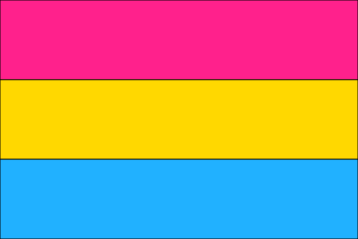

Pansexuality is sexual, romantic, or emotional attraction towards people regardless of their sex or gender identity. Pansexual people may refer to themselves as gender-blind, asserting that gender and sex are not determining factors in their romantic or sexual attraction to others.